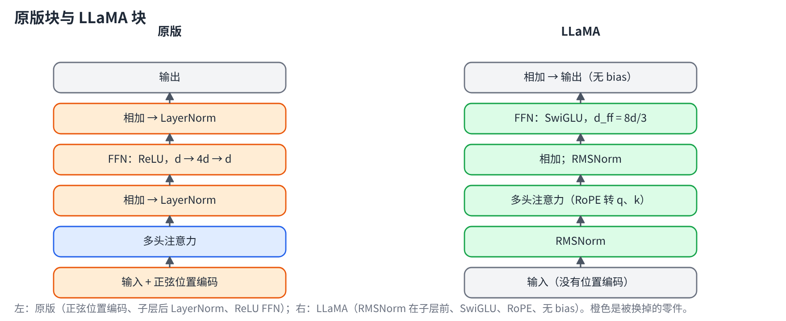
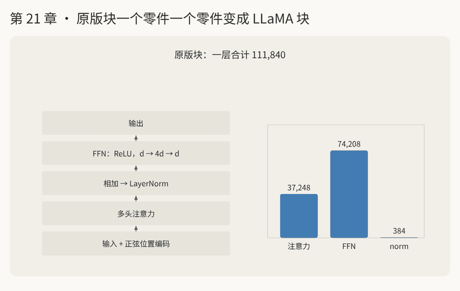

第 21 章 · LLaMA 配方：Pre-norm + RMSNorm + SwiGLU + RoPE 怎么拼到一起
本地运行
git clone https://github.com/wikieden/beyond-transformer
cd beyond-transformer/code/notebooks
pip install jupyterlab torch numpy
jupyter lab ch21_llama.ipynb也可以下载后直接用 VS Code 打开 .ipynb 运行。需要 GPU 的章节在 Colab 里选「代码执行程序 → 更改运行时类型 → GPU」。
本章回答：段 B 讲了一个个零件，LLaMA 是第一个把它们拼成一套“标准配方”、又公开了权重的模型，后来的开源模型几乎都照着它改。从原版块到 LLaMA 块，到底换了几样东西、每样从哪来？参数量怎么变？训练超参（AdamW β₂ = 0.95、余弦降到 10%、权重衰减 0.1、裁剪 1.0）各对应前面哪一章？
讲解日期：2026-11-26 · 上一章：第 20 章 μP 与 DeepNorm · 下一章：第 22 章 KV cache 与 GQA
对应原文：LLaMAtransformer-deep-dive/materials/text/papers/llama-2302.13971.txt引言 L36–L48（按 Chinchilla 的思路“小模型多训数据”）、Table 2 L126–L132（各尺寸的 d、头数、层数、学习率、batch、token 数）、§2.2 Architecture L149–L180（Pre-normalization [GPT3]、SwiGLU [PaLM]（d_ff = 2/3·4d）、Rotary Embeddings [GPTNeo]）、§2.3 Optimizer L181–L195（AdamW β₁ = 0.9、β₂ = 0.95，余弦降到 10%，权重衰减 0.1，裁剪 1.0，warmup 2000 步）
本章缩写：LLaMA = Large Language Model Meta AI（Meta 的大语言模型）；Pre-norm（子层前做 norm，第 12 章）；RMSNorm（第 13 章）；SwiGLU（第 14 章）；RoPE（第 15 章）；bias（偏置项）；β₂（Adam 二阶矩的衰减系数，第 3 章）。全部缩写见 附录 · 缩写与术语表
讲解
第一步：四样零件，一样一样换（2026-11-26）
类比：一辆老车换四样东西就成了新车型。 发动机（FFN）、悬挂（norm）、导航（位置编码）都换了新款，车身（注意力 + 残差）没变。LLaMA §2.2（L149–L180）把它说得很直白：每一项都标了“抄自谁”。
| 零件 | 原版 Transformer | LLaMA | 出处 | 本书 |
|---|---|---|---|---|
| norm 的位置 | Post-LN（相加后 norm） | Pre-norm（子层前 norm） | GPT-3 | 第 12 章 |
| norm 的种类 | LayerNorm（γ、β） | RMSNorm（只有 g） | Zhang & Sennrich | 第 13 章 |
| FFN | ReLU，d → 4d → d | SwiGLU，d_ff = 2/3·4d | PaLM | 第 14 章 |
| 位置编码 | 正弦，加在嵌入上 | RoPE，每层转 q、k | GPTNeo | 第 15 章 |
| bias | 有 | 全部去掉 | — | 第 13 章 |
注意力本身（多头、缩放点积、因果 mask）和残差结构都没变。
数字演示（d = 96 的一层，看参数怎么变；位置编码换成 RoPE 后不占参数）：
| 换到哪一步 | 注意力 | FFN | norm | 一层合计 |
|---|---|---|---|---|
| 原版（LayerNorm、ReLU FFN、有 bias） | 37,248 | 74,208 | 384 | 111,840 |
| 换成 Pre-norm + RMSNorm | 37,248 | 74,208 | 192 | 111,648 |
| FFN 换成 SwiGLU（d_ff = 256 = 8/3·96） | 37,248 | 73,728 | 192 | 111,168 |
| 去掉所有 bias | 36,864 | 73,728 | 192 | 110,784 |
d = 96 时 8/3·d 正好是 256（64 的倍数），SwiGLU 的三个矩阵和原来的两个矩阵参数完全一样多。四步改完，参数量几乎没变：LLaMA 换的是结构，不是大小。

图 21-1 · 左：原版块（Post-LN、ReLU FFN、位置编码加在输入上）；右：LLaMA 块（RMSNorm 放在子层前、SwiGLU、RoPE 在注意力里转 q、k、没有 bias）。橙色是被换掉的零件一句话：LLaMA 块 = 原版块把 norm 挪到子层前并换成 RMSNorm、FFN 换成 SwiGLU、位置编码换成 RoPE、去掉 bias；参数量几乎不变。
第二步：训练超参，各对应前面哪一章（2026-11-26）
LLaMA §2.3（L181–L195）：
| 超参 | 值 | 本书 |
|---|---|---|
| 优化器 | AdamW，β₁ = 0.9、β₂ = 0.95 | 第 3 章（β₂ 比默认 0.999 小，更快忘掉旧梯度） |
| 学习率调度 | 余弦，最后降到峰值的 10% | 第 4 章 |
| warmup | 2000 步 | 第 4 章 |
| 权重衰减 | 0.1 | 第 3 章（AdamW 的解耦衰减） |
| 梯度裁剪 | 1.0 | 第 4 章 |
数字演示（峰值 3 × 10⁻⁴、warmup 2000、共 10 万步）：
| t | 0 | 1,000 | 2,000 | 51,000 | 100,000 |
|---|---|---|---|---|---|
| lr | 0 | 1.5 × 10⁻⁴ | 3.0 × 10⁻⁴ | 1.65 × 10⁻⁴ | 3.0 × 10⁻⁵ |
和第 4 章的唯一区别：αmin 是峰值的 10%，不是另设的一个数。
一句话：LLaMA 的训练超参就是本书第 3、4 章的那一套：AdamW（β₂ = 0.95）、warmup 2000 步后余弦降到 10%、权重衰减 0.1、裁剪 1.0。
第三步：“小模型多训数据”（2026-11-26）
LLaMA 引言（L36–L48）的立场：按 Chinchilla 的缩放律，给定训练预算有一个最优的模型大小；但模型训完后要被用很多次，推理成本只和模型大小有关。所以宁可训一个小一点的模型、喂更多数据，训练时多花点，推理时便宜很多。LLaMA-7B 训了 1T token（Table 2，L130），每个参数 149 个 token，远超 Chinchilla 的约 20 个（第 24 章接着算）。
这条思路决定了之后的开源模型：LLaMA 2 训 2T，LLaMA 3 的 8B 训了 15T token。
场景代码：Hugging Face 的 LlamaConfig 把这套配方写成了配置项（真实库调用；本书 chapter-code 只用 NumPy，这段没跑过）：
cfg = LlamaConfig(hidden_size=4096, intermediate_size=11008, num_hidden_layers=32,
num_attention_heads=32, num_key_value_heads=32, # LLaMA 1 还没有 GQA（第 22 章）
hidden_act="silu", rms_norm_eps=1e-6, rope_theta=10000.0,
attention_bias=False, mlp_bias=False, tie_word_embeddings=False)
model = LlamaForCausalLM(cfg)
给 Llama 的配置逐项数参数、和官方的 6.7B 对上，是里程碑 T-M1 的一部分。
一句话：LLaMA 选择“小模型多训数据”：训练多花一点，换来推理便宜，7B 模型训了 1T token。
动画演示：原版块一个零件一个零件变成 LLaMA 块

可交互版：animations/21-llama.html（▶ 播放 / → 单步：每一步换一个零件）。
怎么看：
- 左边是一个块的结构图，当前被换掉的零件变橙（第一步）；
- 右边的柱子是这一层的参数（注意力、FFN、norm），换零件后几乎不变；
- 最后一步出现 LLaMA 的训练超参表（第二步）。
练习与作答记录
题 1（第一步）：d = 192，按 8/3·d 再取 64 的倍数，SwiGLU 的 d_ff 是多少？三个矩阵的参数和 d_ff = 4d 的两个矩阵相比如何？
题 2（第二步）：峰值学习率 1.5 × 10⁻⁴、warmup 2000、共 50,000 步，余弦降到 10%，第 26,000 步的学习率是多少？
题 3（第三步）：用自己的话说，为什么一个要被大量使用的模型，值得“训练时多花算力、做得小一点”？
口诀
老车换四样：norm 挪前面换 RMS，FFN 换 SwiGLU，位置换 RoPE，bias 全去掉；参数几乎不变。
训练照前几章：AdamW 贝塔二零点九五，warmup 两千，余弦降到一成，衰减零点一，裁剪一。
小模型多训数据：训练贵一点，推理一直便宜。
本章复习卡片
必背：B53（LLaMA 换的四样零件和出处、训练超参、“小模型多训数据”）。练习做完后，按答错、卡住的地方再补。
附录 · 延伸阅读
留给以后深入学习用，不影响本章主线。★ 是建议先读的。
推荐阅读
| 读什么 | 读哪里 | 读它为了什么 |
|---|---|---|
| ★ LLaMA（Touvron 等 2023） | 引言 L36–L48；Table 2 L126–L132；§2.2–§2.3 L149–L195 | 标准配方的出处 |
| 本书 第 12–15 章 | 全部 | 四样零件各自为什么 |
| Raschka，“The Big LLM Architecture Comparison”（在线） | 全文 | 后来的模型在 LLaMA 上又改了什么 |
| 第 24 章 | 配置表 | LLaMA 3、Qwen3 的选型 |
数学原理
- SwiGLU 的参数对齐：3·d·(8d/3) = 8d² = 2·d·4d；d 是 24 的倍数时 8d/3 是整数，是 64 的倍数还要 d 是 24 的倍数且 8d/3 能被 64 整除（如 d = 96）。
- 去掉 bias 的参数：注意力 4 个矩阵各少 d 个，FFN 少 d_ff + d 个，相对于 d² 级别的矩阵可以忽略。
- 训练 vs 推理成本：训练 ≈ 6ND（一次），推理每个 token ≈ 2N（很多次）；推理量足够大时，减小 N 比减小 D 更划算。
公式清单
| 公式 | 意思 |
|---|---|
| \(h = x + \text{Attn}(\text{RMSNorm}(x))\)，\(y = h + \text{SwiGLU}(\text{RMSNorm}(h))\) | LLaMA 块 |
| \(d_{ff} = \frac23\cdot 4d\) | SwiGLU 的中间层 |
| \(\alpha_t = 0.1\alpha_{\max} + \frac12(1 + \cos\pi p)\cdot 0.9\alpha_{\max}\) | 余弦降到 10% |
代码对照：把本章的数字用代码算一遍
NumPy。代码在仓库本地
beyond-transformer/solutions/chapter-code/ch21_llama.py，配套测试tests/test_ch21.py，notebook 在notebooks/ch21_llama.ipynb：
bash cd beyond-transformer/solutions/chapter-code uv run python ch21_llama.py uv run pytest tests/test_ch21.py
讲义 ↔ 代码：
| 讲义 | 公式 | 写法 | 跑出来 |
|---|---|---|---|
| 第一步 换零件 | 一层的参数 | layer_params(**kw)、STEPS |
111,840 → 110,784 |
| 第二步 学习率 | 余弦到 10% | cosine_to_10pct(t) |
第 100,000 步 3.0e-5 |
关键几行：
mlp = 2 * d * f + ((f + d) if bias else 0) # ReLU FFN：两个矩阵 + 偏置
f = int(math.ceil(8 * d / 3 / 64) * 64); mlp = 3 * d * f # SwiGLU：三个矩阵，8d/3 取 64 倍数
norms = 2 * (2 * d if norm == "layer" else d) # LayerNorm 有 γ、β；RMSNorm 只有 g
代码里才看得到的 2 件事：
- 只数了一层的矩阵：嵌入层、输出层、最后的 norm 都没算进来；完整地给真实配置数参数是里程碑 T-M1。
- d = 64 时对不齐：8/3·64 = 170.7，取 64 的倍数是 192，SwiGLU 反而多 12% 参数；所以这里选了 d = 96。实际模型（d = 4096）误差在 1% 以内。
自己改一改（不影响练习答案）：
- 把
D改回 64，四步的合计怎么变？SwiGLU 那一步多了多少？ - 把
cosine_to_10pct的最低点改成 0（降到 0），最后 1000 步的学习率差多少？